Opening Gambit
Sunday, October 25
“History, Stephen said, is a nightmare from which I am trying to awake.”James Joyce, Ulysses
a New Haven mystery
One dead dealer. One gold cufflink. A city that can’t outrun its past.
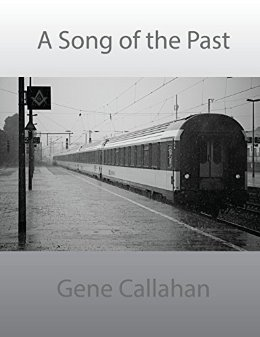
the book
New Haven, October 1998. In the small hours of a freezing Sunday morning, two drunks lost at the dead end of Chapel Street find a young man’s body roped upside down to a chain-link fence, his face shot away. The victim is Ben Moore, a small-time crack dealer, and as far as the New Haven Police Department is concerned that settles it: one more drug killing, and nobody really cares whether it gets solved.
Detective Deirdre O’Reilly isn’t so sure. Half Jamaican, half Irish, raised in Cobh and still carrying the brogue, she is the department’s newest homicide detective, and she is still hungover from last night’s Guinness. Why would a rival dealer stay behind to pose a corpse? And what is a gold cufflink, set with a jewelled eye and engraved 322, doing beside the print of a man’s dress shoe?
The cufflink leads Deirdre up Chapel Street, from the housing projects to Yale’s most secretive society and the granite mansion of one of the city’s richest, best-connected men. Along the way a green-eyed medical examiner complicates her heart, and the deeper she digs, the more dangerous the game becomes.
A Song of the Past is a literate, darkly funny mystery about a city, and a detective, who can’t escape their histories.
eight days · eight moves
The novel unfolds over one week in late 1998, from a body found before dawn on Sunday to All Souls’ Day, and each of its eight parts is named for a phase of a chess game.
Sunday, October 25
“History, Stephen said, is a nightmare from which I am trying to awake.”James Joyce, Ulysses
Monday, October 26
“In yonder nether world where shall I seek / His bright appearances, or footsteps trace?”John Milton, Paradise Lost
Tuesday, October 27
“History justifies whatever we want it to.”Paul Valéry
Wednesday, October 28
“The main objective of any operation in an open file is the eventual occupation of the seventh or eighth rank.”Aron Nimzowitsch, My System
Thursday, October 29
Friday, October 30
Saturday, October 31: Halloween, and Yale plays Harvard
“All the world’s a stage”Shakespeare, As You Like It
Sunday, November 1: All Souls’ Day
“We are but of yesterday, and know nothing, because our days on earth are a shadow.”Job 8:9
the pieces on the board
Detective, NHPD Homicide
Twenty-eight, Jamaican mother, Irish father, raised in Cobh. She smokes, drinks stout, quotes Roger Bacon, and became a cop because she wanted to be Sherlock Holmes.
Medical Examiner
Red-haired and sea-green-eyed, a Yale man newly back from Seattle, recently separated, and a little too fond of New Haven history.
Investment banker
A Bonesman who lives in the stone mansion at the top of Chapel Street. A year ago his wife was murdered at the street’s other end.
a.k.a. J Lil Burn
The dead man’s sullen best friend and a local rapper.
Deirdre’s boss
Blustering and stuttering but basically fair. He wants the case closed, and the mayor’s office keeps calling him.
Deirdre’s cousin
A Jamaican reggae musician and Deirdre’s ear on the street. He doubts the powerful will ever let a rich man be brought in.
“Alvin, you’re a shite liar.”Detective Deirdre O’Reilly
read an excerpt
Prologue
Sunday, October 25, 1998, 2:30 A.M.
The western end of Chapel Street begins in quiet, tree-lined respectability, the respectability of money as old as the city of New Haven itself, the respectability of Puritan lineages stretching back to John Davenport, James Pierpont, Ezekiel Cheever, and Theophilus Eaton: the aristocracy of the first European settlers. Block after block, dignified houses squat front and center upon lots so regularly shaped that their borders might have been traced on the land by some rectangle-mad geometer. These squatters break the geometrical regularity of the scheme with protruding bay windows; porches, wrapping from the front of the house around one side but not the other, covered by roof extensions sporting fluted columns that evoked Greek temples and Roman villas; and mud rooms lopsidedly favoring the opposite quadrant of the lot. At first glance, these residences might appear to present a rebuke to the dull, cost-effective sameness found in most postwar housing developments, and yet they all strive to speak in unison about their inhabitants’ place in the social order: they announce quite clearly that those living inside belong to the quite comfortable and fastidiously conventional upper-middle class. However, there is another vantage from which this local display of prosperity is akin to the gaudy jewels and overdone makeup of a once-attractive but now-decrepit dowager, which, ironically, call attention to rather than disguise the dilapidation from which they are meant to distract: New Haven is one of the poorest cities in the United States.
Perhaps the foremost bauble sported by this no-longer-glamorous, but still proud, matron, reposes at the very northwestern end of Chapel Street, at its T-intersection with Forest Road. It is an impressive mansion hewn from gray and beige blocks of granite and sandstone, a fortress topped by turrets that on a winter’s night offer a very expensive view of the glittering downtown lights. The castle’s rocky countenance is softened by stained glass windows that transmute the vulgar sunshine they receive into the muted pastels toning the dark oak floors laying on their other side. Set as it is among a neighborhood of larger-than-average houses, this outlier still is capable of summoning forth, in the susceptible mind, the image of a stone giant quietly standing guard over his diminutive fellows. The giant glowers across Forest Road at a rustic stonewall, marking the boundary of an undeveloped, wooded parcel. Does this giant fear an attack by wood nymphs or forest elves?
From this hall of the giant kings, Chapel Street heads to the southeast in an essentially straight line toward downtown New Haven—a journey that will transform its character many times along the way. For ten or so blocks toward the city center, the houses are still fairly large, their yards still rectangular, and the sidewalks in front still shaded by tree branches. But the attentive observer of the street’s progress can detect signs that it now hosts occupants whose lifestyles are significantly different from that of the residents we have left to our northwest. More and more, there are two front doors with separate doorbells at each house, and not all of the inhabitants’ cars can fit in the attached garage or even in the short driveway leading to it. What’s more, the most common vehicles are no longer Audis, Saabs, and BMWs, but Toyotas, Hondas and Fords. As one proceeds even farther southeast, it may strike our humble pilgrim that the street’s route resembles one of those red lines on a graph that serve as a visual indicator of economic decline. A quarter of a mile beyond its passage through Edgewood Park, Chapel Street approaches the bottom of the graph, entering a region where the most profitable occupations to be found among the residents are prostitution and drug dealing.
…and at the very bottom of that graph, where Chapel Street dead-ends among the junkyards, two lost drunks are about to make a discovery.
Part I · Opening Gambit
Sunday, October 25, 4:30 A.M.
Daddy waved at Deirdre from the door of the cottage. She knew she was safe with him nearby, no matter what beasts might lurk in the greenery through which she crept. Slowly she inched toward the ancient tree at the center of the garden, where her friend from the big house, Colin, was waiting. Passing under the farthest extent of the great oak’s limbs, where the branches dipped so low that they almost returned to the earth from which they had arisen, she could just spy him, dappled in green and gold, sitting in the distant center, his back against the oak’s massive trunk. Despite the fact that she had resolved not to show her lack of resolve, her eyes shyly flitted away from meeting Colin’s bold gaze. They had held hands and kissed before, but at this meeting she had promised to let him touch her privates: today would be the crossing of a previously inviolate border.
Deirdre halted, with the tips of the oak’s extremities shaking in time with her own trembling. What if she forged ahead, and then they were caught? Or, perhaps even worse, what if she forged ahead, and they weren’t caught, but she found that she liked him touching her there? What if she wanted to be touched down there, again and again, time without end… her knees went weak, but then, just before she surrendered to that weakness, at the periphery of her awareness, came the lapping sounds of the waters of the harbor as they tongued the seawrack. Through the leafy canopy over her head, she could just make out pastel bars of green-striped soap drifting across the cloud-mottled sky.
Green soap in the clouds? Something was terribly wrong, but her attempt to pinpoint just what that was interrupted by the tolling of a church bell—Angelus Domini! She was late for catechism class. No, no, that couldn’t be right! She had finished catechism lessons many years ago, nevertheless, the tolling of the bell continued, each successive peal sounding from farther away, as if the bell was receding down the tunnel that now filled her vision. Along the sides of the tunnel fantastic creatures tangled in an intricate dance: long necked dragons with monkey heads; lions with eagle wings; men with the heads of asses; snakes with a dozen arms; fish with hands; alien men hopping along on their single foot, sporting huge mouths where their stomachs ought to have been. She knew that she had to find a way to climb upwards, out of the tunnel, to relieve the headache produced by those damned bells. But even as she attempted that feat, she was thwarted again and again by a steady flow of Guinness stout pouring smoothly and refreshingly down the tunnel.
Guinness stout? She had had too much of it, just earlier, and that was what was keeping her in this pit. She willed herself awake, only to find that the bell still tolled for her: Her phone was ringing. She focused for a second on the alarm clock on her nightstand: the glowing blue digits read 4:32. It was early Sunday morning, and Deirdre had still been out at a quarter-to-two. She had gotten… what?... perhaps two hours of sleep, and the alcohol she had consumed still coursed through her system.
Before answering the maddeningly insistent caller who was torturing her via her phone, she clicked her tongue against the cottony roof of her mouth several times, hoping against reason that it would enable her to form comprehensible words. When she lifted the phone to her head, what she did manage to say was something like “Ggggunlph.”
“Deirdre, it’s Patrick—this is your wake up call.”
Deirdre astutely responded, “Huh?”
“Homicide, down at the end of Chapel Street. The captain wants you on it. Probably a drug shooting.”
Deirdre mumbled, “Have to get a taxi.”
“Don’t worry. I sent a squad car to pick you up.”
Part II · The First Exchange
Monday, October 26
She opened the door of Interview Room B to find a sullen-looking teenager, about eighteen or nineteen years old, slumped in a chair, his unlaced high tops crossed on the table in front of him. He wore a UConn sweatshirt with the hood pulled over his head and nearly down to his dark eyes, and a pair of baggy jeans that doubtlessly showed about half-a-foot of boxers above the belt.
“Good morning, Alvin. I’m Detective O’Reilly.”
“You don’t look Irish.”
“I know, I know. A little mix-up at the hospital. Nobody noticed for years.”
Alvin looked consternated. Deirdre gave him a saccharine smile. She felt his pain; not only did he have to deal with a cop, and a woman cop at that, but a wise-ass woman cop. She deepened the Irishness of her English, hoping to throw him further off balance.
“Now your colleague, Mr. Moore, he’s met an untimely end.”
“Yeah—well what you call a timely end?”
“That’s a fine point, young Alvin. But I have a point as well, and it’s this: Whatever you and your friends are up to on the street, we don’t want to see you getting gunned down. I assume you share me sentiment.” She looked at him quizzically, her eyes meeting a blank wall.
“Very well, since we’re in agreement, let’s get on with things. Now you were a close friend of Ben’s.”
“Maybe I was.”
“Alvin, I’m not interested in arresting you for friendship. And I’m in Homicide, not Vice. I know that Ben ran a little crack business, and that you were probably involved as well, but that’s not what I’m after. I want to find the person who killed your friend.”
Deirdre had stood up and walked to Alvin’s side of the table during her speech, and the last words were spoken about six inches from his face. She stepped back to watch his reaction. Still defiantly sullen, but she definitely had his attention.
“Was he moving in on someone’s turf?” Nothing.
“Did he rip somebody off?” He sat like a stone.
“Owe somebody money?” Silence reigned. Deirdre felt like she was playing a bad game of twenty questions, where she never got an answer back. She paced the room with her hands behind her back. Timing… like a candid photo…
“Was he doing a bit of business with someone wealthy?” Bingo! His eyes had flinched. Per the code of the streets, she pressed her advantage. If she could stare him down, she was in control.
“Well, was he?”
“How the hell would I know? If he was dealin’, I didn’t know nothin’ ‘bout it.”
“Alvin, you’re a shite liar.” She had the upper hand, but how to keep it? Throw him out. “Well, maybe some fookin’ vigilante’s come to gun down you and your friends one at a time. Some people here told me to forget the investigation, it’s just some drug-dealing scumbag who’s been shot, but I wondered if it wouldn’t be nice to see a little justice done. But you don’t feckin’ care enough about your best friend even to want his killer caught. Get the hell out of here! If you change your mind and decide to help, you know how to find me.”
Deirdre wheeled and strode briskly out of the room. A few minutes later, after a uniformed patrolman led a bewildered-looking Alvin Blaine past her desk and out of the station, Deirdre broke out laughing.
the city as character
The book’s New Haven is the real one. Deirdre’s week takes her from the Puritan founders’ Green to the cave where two of the judges who condemned Charles I hid from the king’s agents, and the city’s three-hundred-year-old history is never as buried as it looks.
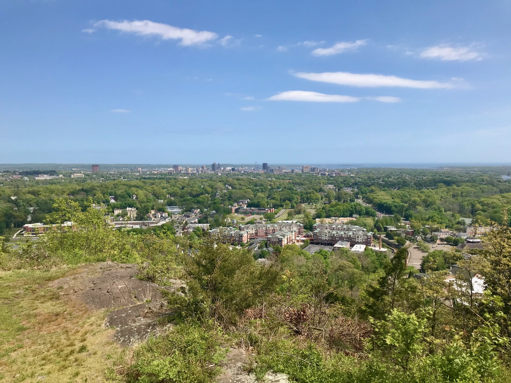
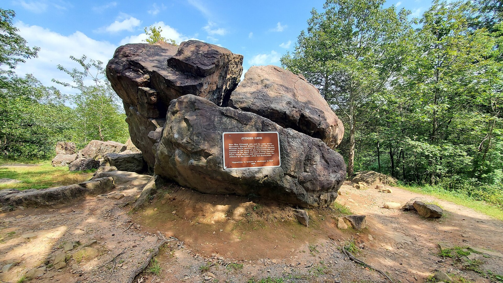
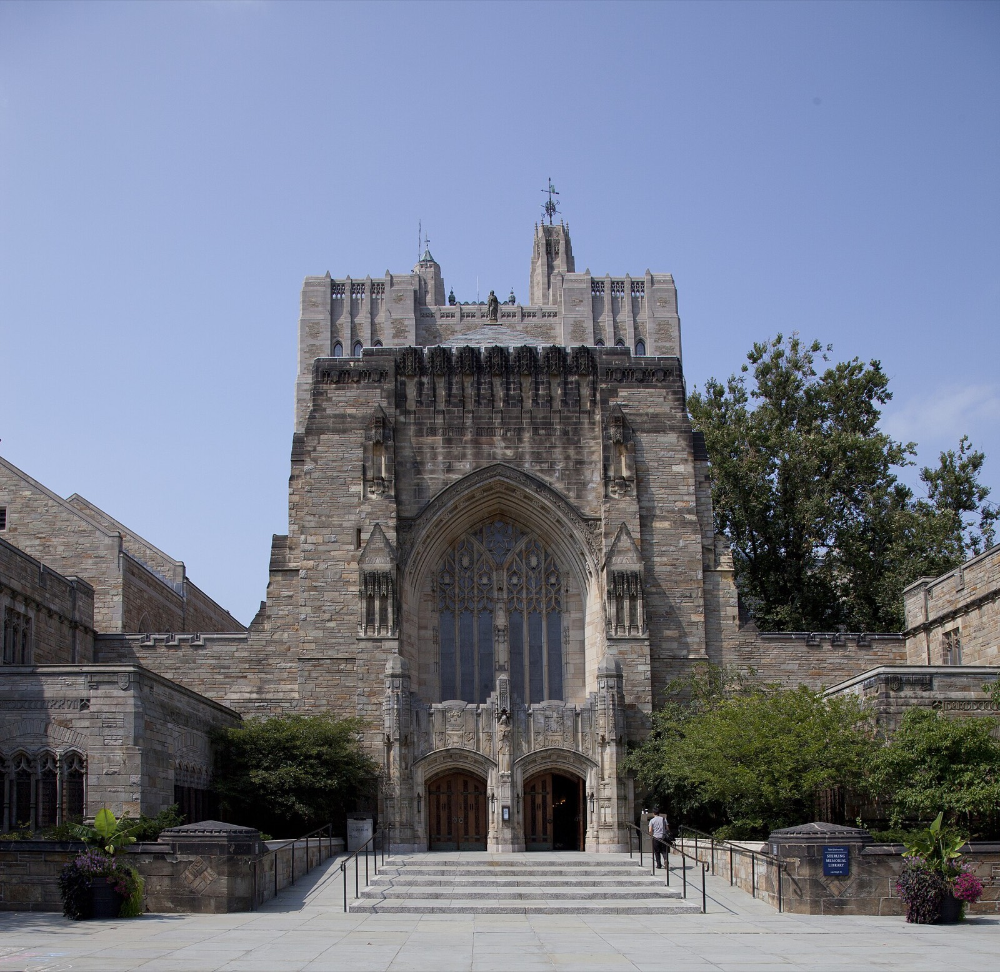
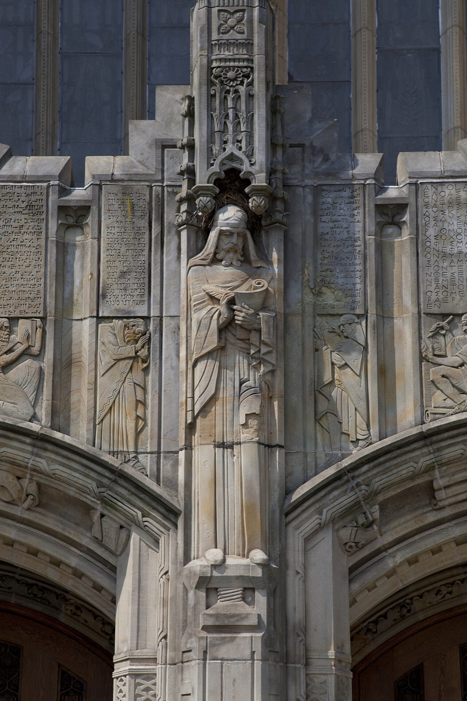
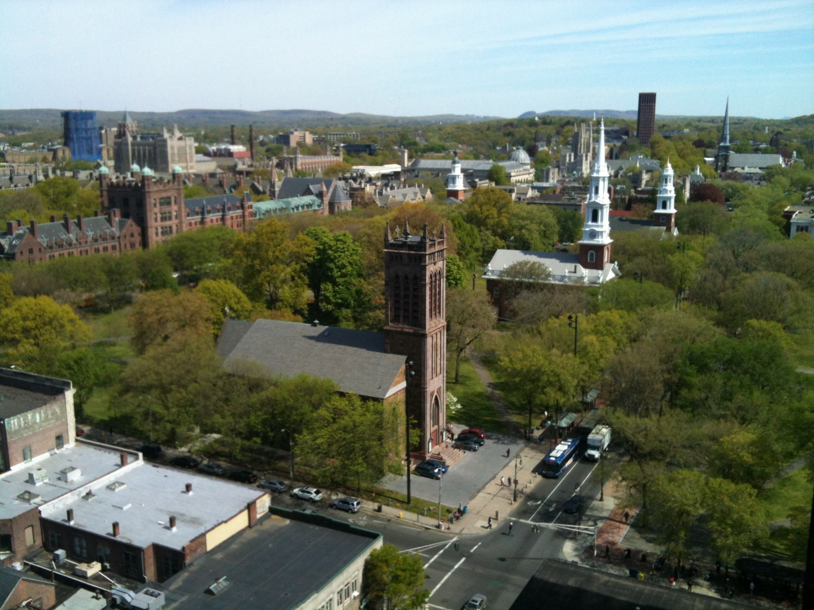
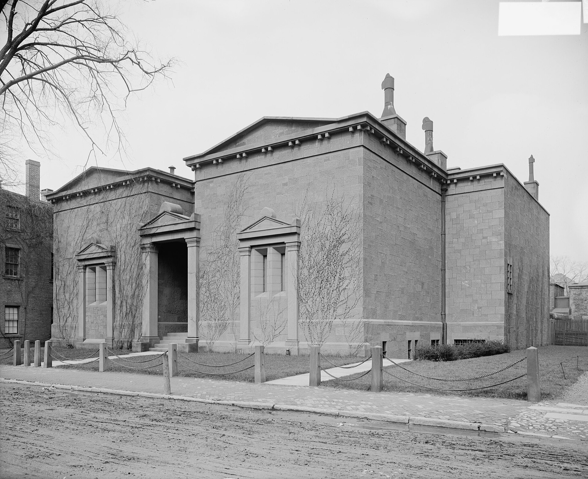
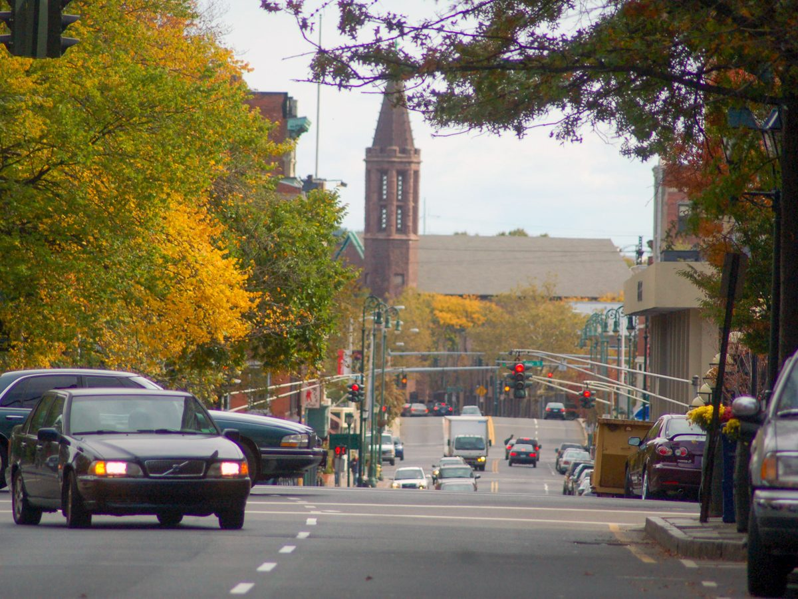
The spine of the book. It runs from a granite mansion at Forest Road, past Edgewood Park and Yale, down to a dead end among the power plant and junkyards.
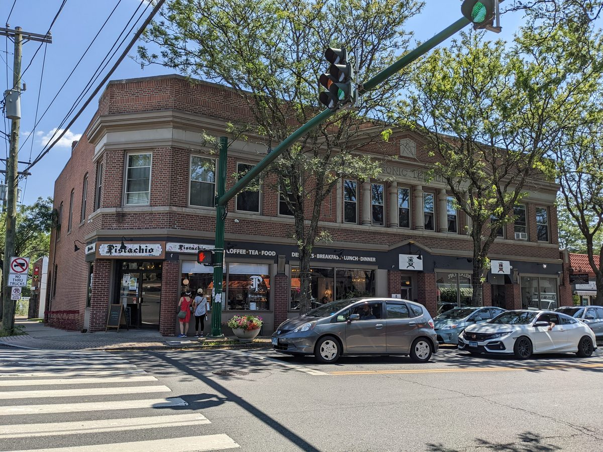
Whalley, Goffe and Dixwell Avenues are named for three judges who signed Charles I’s death warrant and fled to New Haven. In this city even the street signs remember. Above: Whalley Avenue in Westville, Deirdre’s neighborhood.
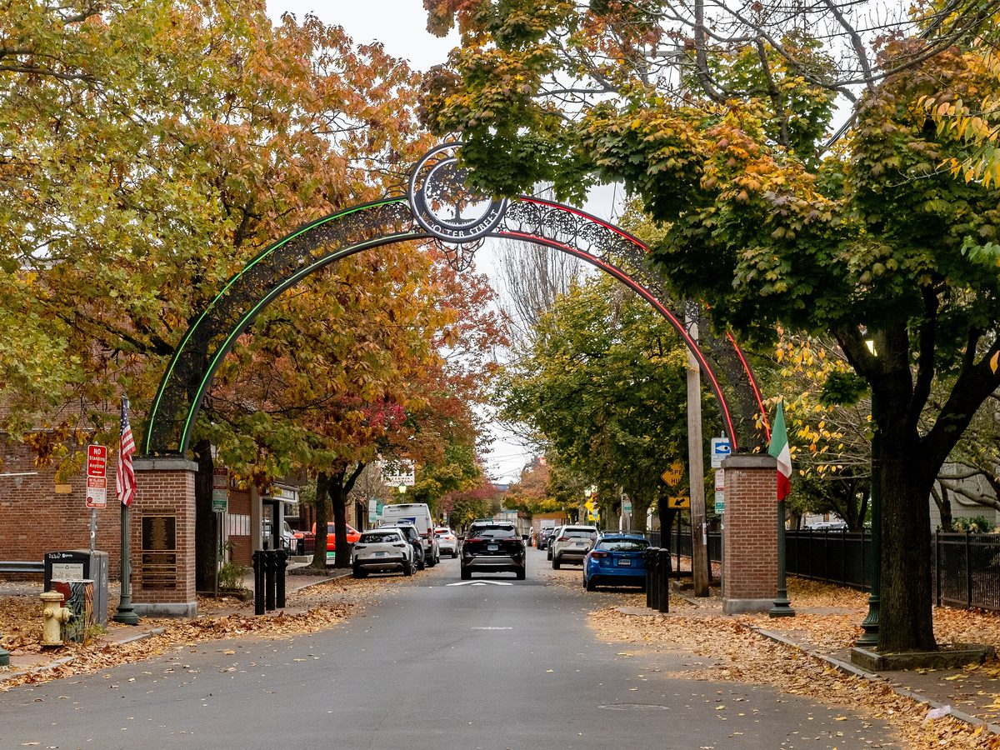
The old Italian neighborhood just past the I-91 overpass, home of what the book calls the best pizza in the world.
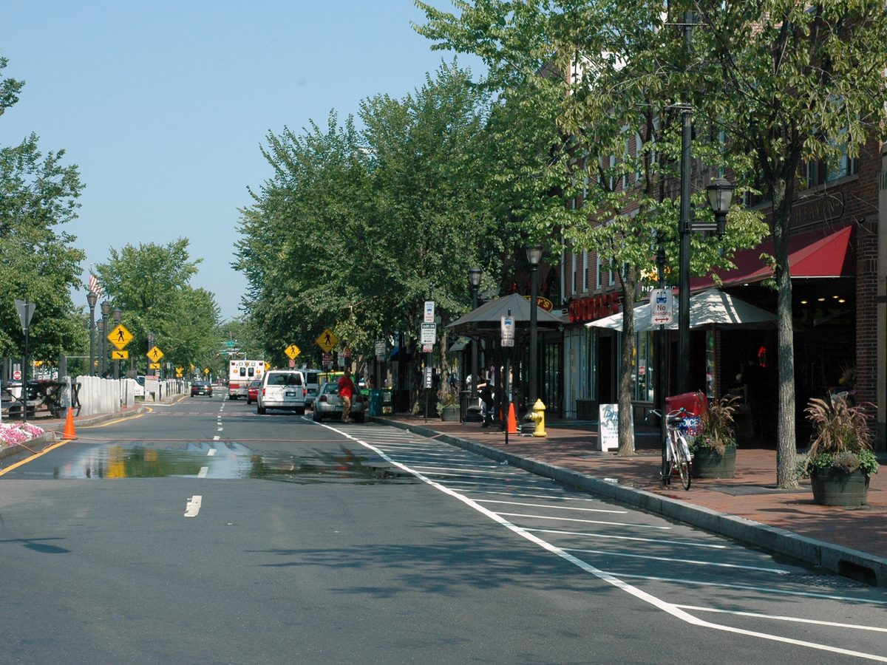
Whitlock’s, the bookshop above a barbershop that Deirdre can never seem to find, and the window-shopping streets of 1998.
get the book